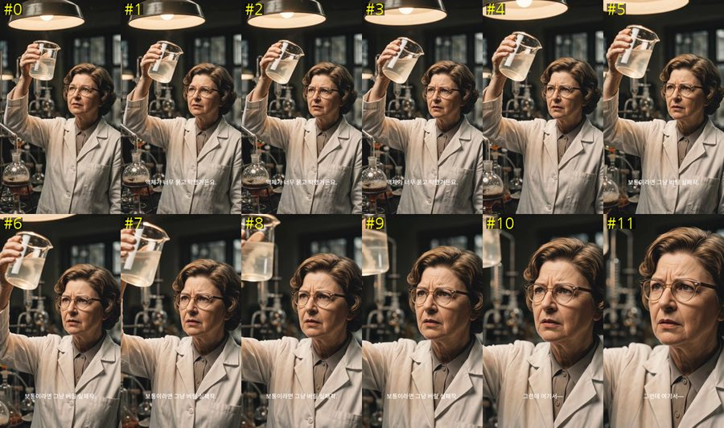
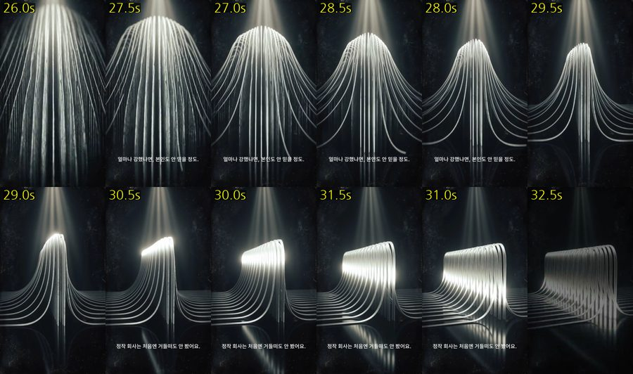
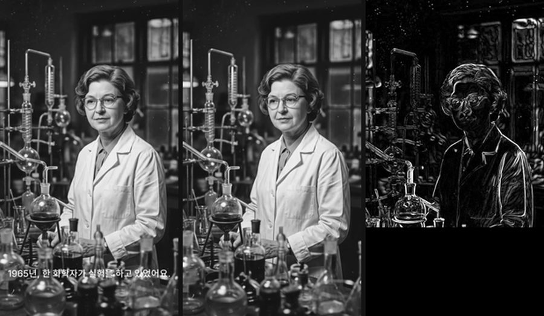
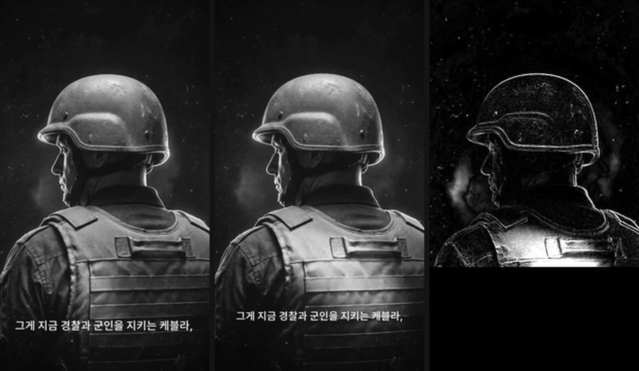

참고 영상(케블라 발명 이야기, 46초 세로)을 프레임 단위로 뜯어 봤다. 정지 사진이 영상처럼 보이는 이유는 줌을 걸어서가 아니라, 컷마다 줌의 크기와 속도가 다르고 그 차이가 이야기의 온도를 따라가기 때문이다.
정지 사진 4컷의 줌 폭이 1.3배에서 2.1배까지 벌어진다. 무작위가 아니라 그 컷이 하는 일에 붙어 있다.
우리 빌더의 기본 줌 폭은 카드 전체에 걸쳐 3.5%다. 같은 7초 카드에서 이 영상은 34%를 쓴다. 열 배 차이다. 지금 우리 영상이 "사진을 붙여 놓은 것" 같다면 원인은 켄 번스가 없어서가 아니라 있어도 안 보이게 걸려 있어서다.
남은 3컷은 진짜 영상 클립인데, 셋 다 움직임 자체가 정보인 자리다. 연기가 흐르고, 화학자가 표정을 바꾸고, 섬유 다발이 쏟아진다. 사진으로는 그 장면이 성립하지 않는다.
측정법 — 컷의 첫 프레임을 배율과 위치를 바꿔 가며 뒤 프레임에 겹쳐 보고, 가장 잘 맞는 값을 그 시점의 카메라 창으로 삼았다. 정지 사진에 줌만 건 컷은 어느 시점이든 잘 맞고, 그림이 실제로 움직이는 컷은 어떤 값에서도 안 맞는다. 소스가 406×720으로 재압축된 카톡 전송본이라 숫자는 반올림해 읽는다.
| 컷 | 시간 | 소스 | 줌 | 속도 | 줌이 향하는 곳 | 그 자리에서 하는 말 |
|---|---|---|---|---|---|---|
| 1 | 0.0–6.6s6.6초 | 영상 클립 | 2.4배 동반 | — | 중앙 | 훅 — "실패작인 줄 알았던 이 물질이, 총알을 막았습니다" |
| 2 | 6.6–14.2s7.6초 | 정지 + 줌 | 1.0 → 1.34 | 초당 4% | 중앙 | 셋업 — "1965년, 한 화학자가 실험을 하고 있었어요" |
| 3 | 14.2–20.8s6.6초 | 영상 클립 | 2.2배 동반 | — | 얼굴 | 문제 → 전환 — "보통이라면 그냥 버릴 실패작. 그런데 여기서—" |
| 4 | 20.8–26.6s5.8초 | 정지 + 줌 | 1.0 → 2.06 | 초당 14% | 중앙 | 행동 — "그녀는 버리지 않고 실을 뽑아봤어요" |
| 5 | 26.6–32.5s5.9초 | 영상 클립 | — | — | — | 물성 — "얼마나 강했냐면, 본인도 안 믿을 정도" |
| 6 | 32.5–41.9s9.4초 | 정지 + 줌 + 빛 | 1.0 → 1.65 | 초당 6% | 중앙 | 결론 — "강철보다 다섯 배 강한 섬유입니다" |
| 7 | 42.0–46.3s4.3초 | 정지 + 줌 | 1.0 → 2.04 | 초당 21% | 얼굴 (가로 0.58 · 세로 0.26) | CTA — "이게 실수였을까요, 발견이었을까요?" |
설명과 결론 컷은 처음부터 끝까지 같은 속도로 오른다. 행동과 질문 컷은 끝까지 가속한다 — 컷4는 0.5초 구간마다 2%·4%·7%·9%·13%·15%·19%·21%로 붙는다. 시작을 눈치채지 못하게 들어가서 컷이 끝나는 순간 가장 빠르고, 그 지점에서 바로 다음 컷으로 끊는다. 우리 빌더의 기본 이징(smoothstep)은 양 끝을 감속하니 반대다.
컷 사이가 크로스디졸브가 아니다. 화면 밝기가 0.2초에 걸쳐 떨어지고, 검정 프레임이 1–3장(0.04–0.12초) 지나간 뒤, 다시 0.2초에 걸쳐 올라온다. 컷5→6 전환에서만 검정이 0.12초로 조금 길다 — 결론 직전에 숨을 한 번 더 쉰다.
이미지 하나가 5–9초를 버티는 동안 자막은 2–3초마다 바뀐다. 컷6은 9.4초를 한 장으로 가면서 자막을 세 번 갈아 끼운다. 스토리보드 규칙의 "2–4초마다 화면에서 뭔가 바뀐다"를 컷 수가 아니라 자막과 줌으로 채운 사례다.
기준이 하나로 읽힌다. 그 순간의 정보가 "무엇이 어떻게 움직이는가"면 클립, "무엇이 있는가 · 무슨 일이 있었는가"면 사진에 줌을 건다.


반대로 셋업·행동 서술·결론·CTA는 전부 사진이다. 결론 컷(9.4초)이 가장 긴 컷인데도 사진 한 장으로 간다. 여기서 필요한 정보는 "케블라 방탄복을 입은 군인이 있다"이고, 그건 움직일 필요가 없다.


directing-grammar.md §4 still lane과 §5 feel 표에 이 영상의 선택이 대부분 들어 있다. 관찰·설명은 느린 드리프트, 결론은 길고 완만하게, 클로즈업은 한 번만 쓰기, 마지막 컷은 얼굴로 향하는 focus 줌 — 실측이 그대로 확인해 준다. 컷7의 유일한 얼굴 클로즈업이 클로즈업 배급 규칙과 맞고, 결론 컷이 9.4초로 가장 긴 것이 "wide ≥ 1.5× close" 비율과 맞는다.
문법이 아직 말하지 않은 것은 강도다. 어떤 무브를 쓸지는 적혀 있는데 얼마나 크게·얼마나 빠르게는 빌더 기본값 하나로 고정되어 있다.
build-reel.sh는 이미 in·out·hold·punch·8방향 pan·focus 좌표·drift·이징을 갖췄다. 막히는 곳은 문법이 아니라 값과 두 가지 기능이다.
| 이 영상이 한 것 | 우리 빌더 | 판정 |
|---|---|---|
| 컷마다 줌 폭 34–106% | ZOOM_SPAN 기본 3.5% | 값만 바꾸면 됨 — 컷 역할별 사다리가 없을 뿐 |
| 2배 확대 | ZOOM_BASE 1620×2880 = 캔버스의 1.5배 | 1.5배가 무손실 상한. 2배 컷은 소스를 2–3배 해상도로 생성해야 함 (빌더 아니라 생성 쪽) |
| 끝까지 가속하는 줌 | KB_EASE smooth(양끝 감속) · linear | ease-in 모드가 없음 |
| 얼굴로 수렴하는 줌 | FX:FY focus 좌표 | 그대로 됨 |
| 암전 통과 전환 | xfade transition=fade (크로스디졸브) | fadeblack으로 한 단어 차이 |
| 사진 위 빛 스윕 | ::overlay.png — 정지 PNG만 | 움직이는 오버레이 경로가 없음 |
| 사진 · 클립 3:4 혼용 | 클립은 visual.video로 이미 합산 2컷 상한 | 이 영상은 3컷 — 상한을 어디에 쓸지의 문제 |
여기서는 제안만 적는다. 실제 수정은 안 했다.
ZOOM_SPAN을 컷 길이 × 역할별 초당 속도로 계산하면 지금 구조 그대로 들어간다. 이게 이 조사에서 가장 값이 큰 한 줄이다.fadeblack. 결론 직전 한 번만 검정을 길게 주는 것도 같이.